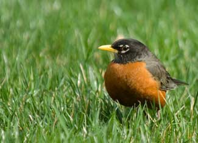

Is your lawn chemically dependent? Every year, many of us treat our yards with pesticides and fertilizers in hopes of creating a healthy and attractive lawn. The problem is that many of the products we use on our lawns aren’t good for us or for the environment. The good news is that there are simple, nontoxic alternatives that can keep your lawn healthy naturally. Some of them can even save you money!
What’s wrong with the usual fertilizers and pesticides?
Unfortunately, improperly used fertilizers can contribute to water pollution by contaminating groundwater and by encouraging algae growth in streams, which disrupts aquatic ecosystems. Pesticides cause problems, too - many are toxic to bees, birds, fish and other forms of wildlife. (This report from Beyond Pesticides has a great summary of environmental effects of different pesticides.)
Another cause for concern is that many common pesticides (and that category includes insecticides, herbicides and fungicides) have well-documented health risks including suspected roles in a number of kinds of cancer, as well as damage to the nervous system and developmental disorders. Even the common herbicide Roundup is associated with a number of health risks. Two good sources to learn more about the health risks of specific pesticides are the pesticide factsheets of the Northwest Coalition for Alternatives to Pesticides (NCAP) and the National Pesticide Information Center.
So what do you use instead of chemical pesticides and fertilizers? In fact, some of the most effective methods for maintaining a beautiful lawn are both simple and nontoxic.
Here are several strategies to consider:
1. Plan ahead to minimize problems.
The easiest way to keep your lawn healthy and keep unwanted weeds out is with a little preventive maintenance that stops problems before they get out of hand. For example:
2. When you need fertilizers or pesticides choose natural, nontoxic options.
3. Learn to live with (or even love) a few weeds.
Sometimes all that's needed to fix a weed problem is a slight change of perspective. Clover is a good example of how personal preference determines whether or not we think of plants as weeds. Take a quick look online and you can find detailed advice both on how to get rid of clover in your yard, and how to add more of it! Rather than fight weeds, you may discover that there are a few you can live with, and even enjoy. For example:
4. Consider reducing the amount of grass in your yard.
It may sound radical, but do you need or want as much lawn as you have? Here are two popular alternatives to traditional turf:
What are your experiences with “greener” lawn care? Have you found nontoxic techniques and products that work well? Have you recently changed your ideas of what a “lawn” should be? Share your thoughts by leaving a comment below.
|
 ISTOCKPHOTO/MICHAEL WESTHOFF Some lawn care chemicals are toxic to wildlife, including birds, bees and fish. You can make your yard "greener" by choosing natural alternatives. |
|
|